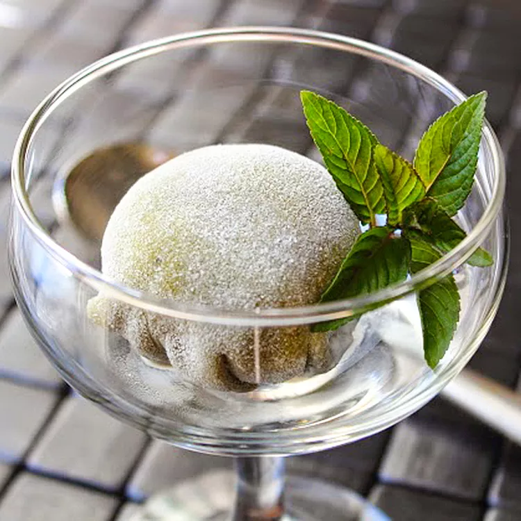

Green Tea Mochi

Mochi has become one of the most aesthetically pleasing desserts in the world. It's the sweet and sticky ice cream that you will be seeing and hearing a lot about this summer, and for a good reason. If you're not already familiar with this Japanese treat, here's what it is and why it's going to be everywhere soon.
What is a Mochi
Mochi (pronounced MOE-chee) is a Japanese dessert made of sweet glutinous rice flour or mochigome.
Mochi dough is often tinted with green tea powder (matcha) or other food colorings and wrapped around a sweet center to form a small, bite-sized confection with a chewy, smooth, elastic texture.
In its traditional form, this kind of Mochi is filled with sweet red bean paste, but in a more modernized version, pastel-colored mochi dough is wrapped around mini scoops of ice cream to make some of the prettiest frozen treats in town.
Flavors include chocolate, vanilla, strawberry, mango, coffee, green tea, and sweet lychee.
traditional Japanese culture, mochi is considered a "food of the Gods" and a symbol of good fortune and happy marriages.
One small piece of mochi is almost the equivalent of eating an entire bowl of rice, so in addition to being a treat, it was also used to provide much-needed sustenance.
Mochi is often served as a central part of the Japanese New Year celebration and is used in religious rituals in the Shinto religion.
ingredients
- 10 small scoops vanilla ice cream
- ½ cup sweet rice flour
- ½ cup cold water
- 1 pinch salt
- 2 tablespoons white sugar
- 1 teaspoon green tea powder (matcha)
- 1 tablespoon cornstarch, or as needed
Steps
- Remove and discard the top half of a cardboard egg carton. Line 10 of the cups in the bottom half of the egg carton with plastic wrap.
- Scoop ice cream into 10 prepared egg carton cups. Cover scoops with plastic wrap and freeze until very firm, at least 2 hours.
- Stir rice flour, water, and salt together in a microwave-safe bowl; add sugar and stir until completely smooth. Whisk green tea powder into rice flour mixture.
- Cover the rice flour mixture bowl with plastic wrap; microwave for 2 minutes. Stir rice flour mixture, re-cover the bowl with plastic wrap, and microwave until mochi dough is thick and sticky, about 1 1/2 minutes more.
- Lightly dust a work surface with cornstarch. Turn mochi dough out on prepared work surface. Roll dough into a 1/8-inch thick rectangle; cut dough into 10 equal squares.
- Remove ice cream balls from plastic wrap. Place 1 ice cream ball in the center of 1 mochi dough square. Gather mochi dough together to cover the ice cream ball completely, pinch the edges together at the base, and cut off any excess dough. Repeat with remaining ice cream and dough squares.
- Tightly cover each mochi ball in plastic wrap and place in egg carton, seam-side down. Freeze until firm, about 2 hours.